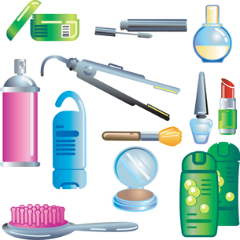

© Christos Georghiou/shutterstock
Can you find one similarity among all of the products in this picture? If you identified petroleum, you were correct. Petroleum is a complex mixture of hydrocarbons. Petroleum’s carbon chains (cyclic molecular structures of hydrocarbons) can be manipulated in many ways to make new molecules.
The manipulation of molecules from petroleum happens in many locations in Alberta. This manipulation of hydrocarbon molecules, known as organic chemistry, is at the heart of the petroleum industry and is the focus of Unit C.
The petroleum industry is considered a keystone industry in Alberta. It produces more than 70 000 products used by society on a daily basis, creates thousands of jobs, and, as you learned in Module 4, generates significant tax revenues for the province of Alberta. Without the petroleum industry in Alberta, Albertans’ quality of life would drop significantly. In Module 5 you will learn about hydrocarbons, the basis of the petroleum industry.
The petrochemical industry is an important subset of the petroleum industry. In Module 6 you will learn how and what petrochemicals are produced and used in Alberta, and you will begin to assess the sustainability of this chemical industry. You will investigate the importance of the petrochemical industry and the impact the industry has on Alberta, Canada, and the world.
At the end of Unit C you will be able to
In the Unit C Assessment you will consider a chemical process used in the development of a common pharmaceutical compound, acetylsalicylic acid (ASA). You will consider this chemical process from different perspectives, which will require you to apply your knowledge of organic chemistry and chemical reactions.